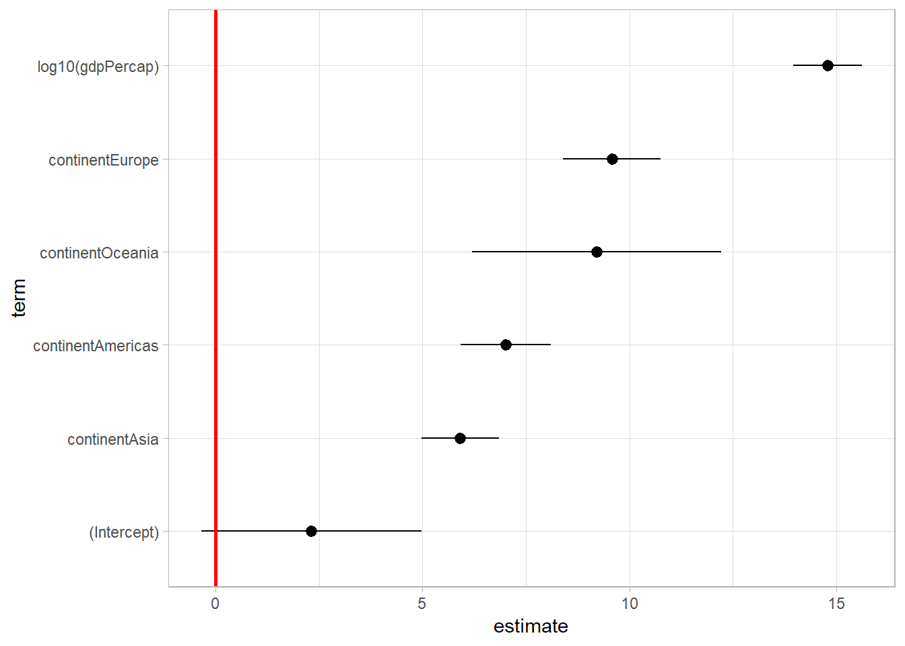

Chapter 6 Showing predictions
Effect(focal.predictors = c("voted_ideo", "winner"), ideology_satis)##
## Re-fitting to get Hessian##
## voted_ideo*winner effect (probability) for 1
## winner
## voted_ideo 0 0.2 0.5 0.8 1
## 0 0.07738718 0.07432926 0.06995037 0.06581111 0.06317929
## 0.2 0.07769769 0.07410523 0.06900243 0.06422663 0.06121568
## 0.5 0.07816558 0.07377033 0.06760280 0.06191642 0.05837700
## 0.8 0.07863605 0.07343684 0.06622953 0.05968401 0.05566216
## 1 0.07895114 0.07321528 0.06532847 0.05823785 0.05391873
##
## voted_ideo*winner effect (probability) for 2
## winner
## voted_ideo 0 0.2 0.5 0.8 1
## 0 0.3031896 0.2960183 0.2852714 0.2745687 0.2674749
## 0.2 0.3039029 0.2954823 0.2828681 0.2703255 0.2620302
## 0.5 0.3049728 0.2946783 0.2792682 0.2639884 0.2539215
## 0.8 0.3060424 0.2938744 0.2756754 0.2576905 0.2458946
## 1 0.3067553 0.2933386 0.2732849 0.2535167 0.2405948
##
## voted_ideo*winner effect (probability) for 3
## winner
## voted_ideo 0 0.2 0.5 0.8 1
## 0 0.5285674 0.5351282 0.5445027 0.5532844 0.5587926
## 0.2 0.5279015 0.5356088 0.5465232 0.5566096 0.5628467
## 0.5 0.5268982 0.5363271 0.5494974 0.5614062 0.5685967
## 0.8 0.5258898 0.5370422 0.5524023 0.5659676 0.5739373
## 1 0.5252147 0.5375173 0.5542999 0.5688746 0.5772640
##
## voted_ideo*winner effect (probability) for 4
## winner
## voted_ideo 0 0.2 0.5 0.8 1
## 0 0.09085585 0.09452425 0.1002756 0.1063358 0.1105532
## 0.2 0.09049792 0.09480369 0.1016063 0.1088383 0.1139074
## 0.5 0.08996341 0.09522425 0.1036317 0.1126889 0.1191048
## 0.8 0.08943174 0.09564648 0.1056927 0.1166580 0.1245060
## 1 0.08907887 0.09592889 0.1070867 0.1193709 0.1282225plot(Effect(focal.predictors = c("voted_ideo", "winner"), ideology_satis))##
## Re-fitting to get Hessian
plot(Effect(focal.predictors = "efficacy", ideology_satis))##
## Re-fitting to get Hessian